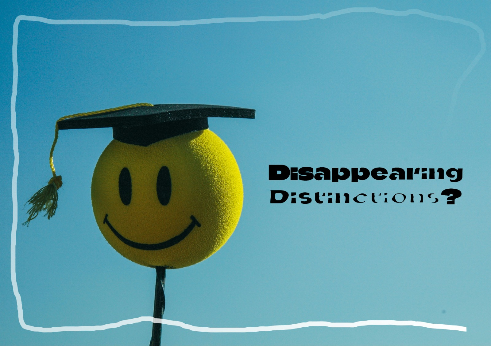

Disappearing Distinctions: Why AUC is Considering Removing Summa cum Laude
More and more Dutch universities are beginning to remove academic distinctions like cum laude and summa cum laude, citing concerns ranging from student burnout to detrimental effects on the learning experience. Dutch university colleges, AUC included, have been more resistant to keeping up with this shifting educational environment, but that may be subject to change – and soon.
By Myrielle Winkelmann | 18 August 2026